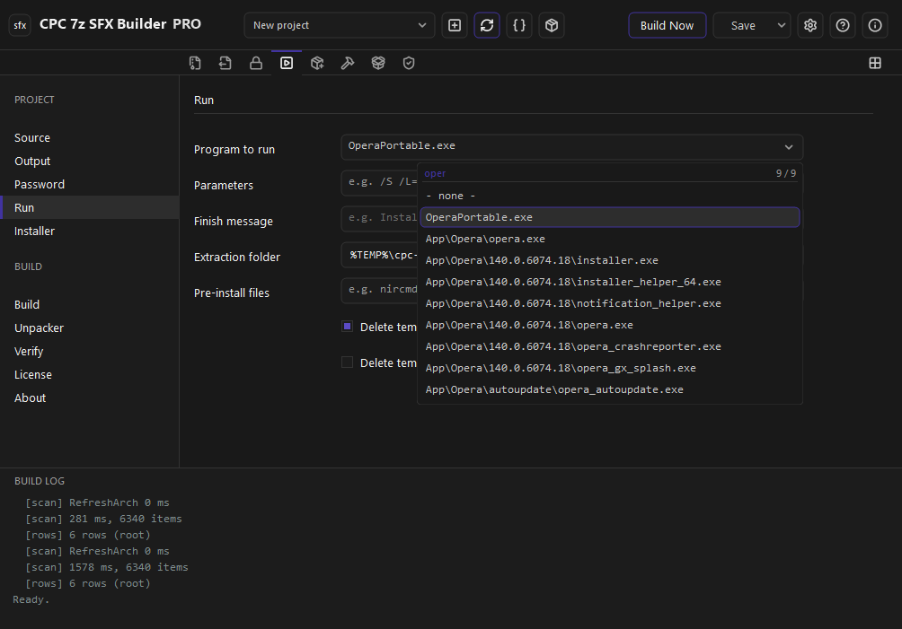
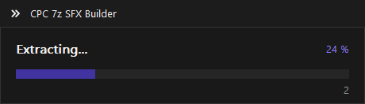

Run
The Run tab configures the post-extraction execution sequence. This includes launching primary executables, deploying scripts, or displaying graphical completion notifications.

Execution Parameters
| Field | Description |
|---|---|
| Program to run | The primary payload executable launched automatically after extraction. |
| Parameters | Command-line arguments passed to the executable, for example /S /L=1038. |
| Finish message | An optional dialog displayed when the process finishes, for example Installation complete. It is valid only when the stub can ask: installer with wizard. For portable packages and for a silent installer the field is not editable. |
| Extraction folder | Where the package extracts its files: Temporary folder (Temp) (default), LocalAppData, AppData (Roaming), ProgramData, or Folder of the SFX package. The field shows the resolved path. See Extraction folder. |
| Delete temporary files after running | Deletes the extracted files after the program finishes. It does not change where the package extracts to. |
| Delete temporary files and the launcher exe after running | Deletes the extracted files and the parent launcher executable after the program finishes. The two switches are mutually exclusive. |
Appearance and visibility
The Package appearance setting is on the Password page: for portable packages you can choose Progress bar or Silent (no window). When the installer is built with the wizard, the field is not editable, because the wizard is always interactive. A silent installer (no wizard) uses this setting exactly like a portable package.
| Element | Progress bar | Silent (no window) | Installer with wizard |
|---|---|---|---|
| Splash screen | yes | no | yes |
| Progress bar | yes | no | yes |
| Password prompt at start | asks | does not ask | asks |
| Finish message | no | no | yes |
| Error window | yes | yes (closes automatically after 5 seconds) | yes |
The error window appears in silent mode on purpose: if the package cannot extract, the user has to see the reason.
With a Free license the splash screen and the progress bar cannot be turned off – they appear in every mode because of the branding. A fully silent package requires a Pro license.
The two windows follow each other: the splash screen finishes first (for the configured minimum time), and only then does the progress bar appear, when the extraction starts.

Extraction folder
The Extraction folder field decides where the package extracts its files. The field always shows the resolved path; the drop-down list contains the available locations.
| Choice | Extraction folder |
|---|---|
| Temporary folder (Temp) | %TEMP%\cpc-sfx-<pid>-<tick>\<product>\ – the program starts from here and the whole folder can be removed after the run |
| LocalAppData | %LOCALAPPDATA%\<product>\ |
| AppData (Roaming) | %APPDATA%\<product>\ |
| ProgramData | %ProgramData%\<product>\ |
| Folder of the SFX package | a <product>\ folder created next to the package |
The extraction folder is always named after the product, so the user can find it. Outside the temp folder the builder writes a hidden .cpc-sfx marker file: deletion only happens when that marker is present, so the package can never remove a folder it did not create.
The Extraction folder and deletion are two separate things. The field sets where the files go; the two checkboxes only control whether they are removed after the run.
Configuring the Primary Executable
- On the Run tab, open the list next to Program to run.
- Select a file from the package. The list contains the executable files and scripts present in the source.
- Specify Parameters if the executable requires them.
- Enter a Finish message (installer mode only) if a completion notification is required.
Using the list
The Program to run, Run after install and Pre-install files fields open the same selector, and the list contains the complete set of executable files in the source (there is no item limit).
- Order: the list starts with the files in the root directory, followed by subfolders in alphabetical order.
- Display: the folder name precedes the file name, for example
Sysinternals\autoruns64.exe; the selected value is the relative path valid inside the package. - Search: while the list is open, type the filter text - it also matches the folder name. The left side of the header shows the typed text, the right side the
matches / totalratio; Backspace deletes the last character. - Keys: ↑ / ↓ (row), PgUp / PgDn (page), Home / End (top and bottom of the list), Enter (select), Esc (close).
- Pre-install files: Space toggles the check mark and the list stays open. The order of selection is also the order of execution. The first row, - none -, clears every selection.
- No match: if the filter finds nothing, the list is empty; press Esc to close it.
Executable Requirements
- The target file must reside within the archive root or a relative subdirectory. Absolute paths and directory traversal (
..) sequences are prohibited. - The file type must be executable: .exe, .com, .bat, .cmd, .vbs, .ps1, or .msi.
- Missing executables trigger a fatal build error during the build.
- If Program to run is empty, the build stops: such a package would do nothing when started and the user would see no feedback at all. In portable mode there is no exception.
Pre-install Files
Pre-install files (.cmd, .exe, .reg) execute sequentially after extraction, prior to the primary executable. This feature is used for registry modifications, environment preparation, or dependency deployment. The specified files must be present in the source directory for automatic inclusion.
In portable mode Program to run is mandatory; an extract-only package cannot be produced. In installer mode the wizard provides the feedback, and the Finish message field is available.